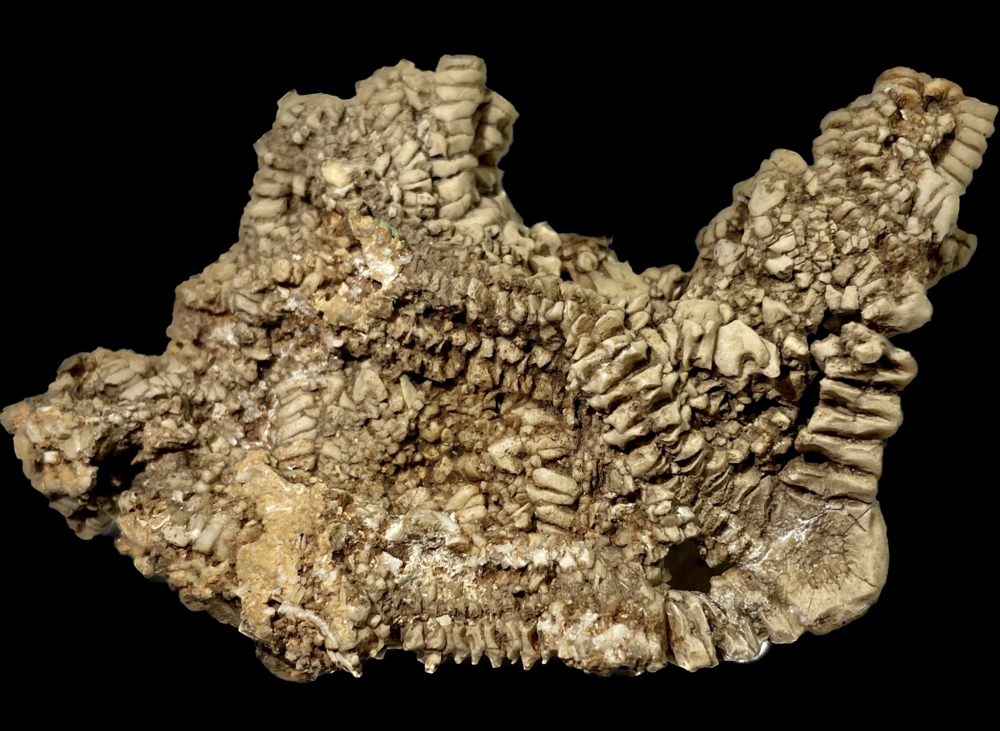
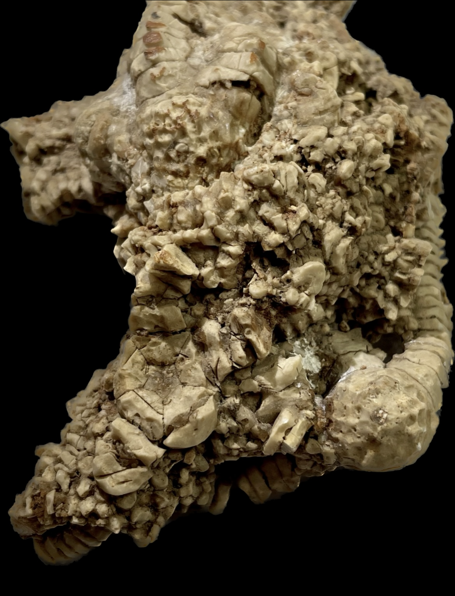
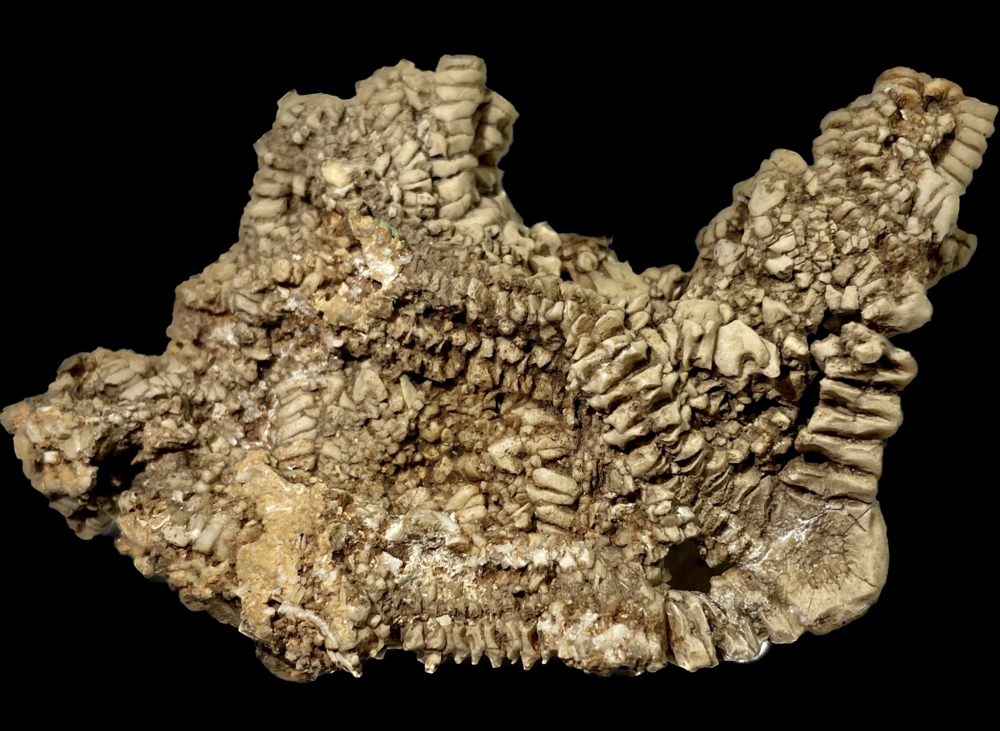
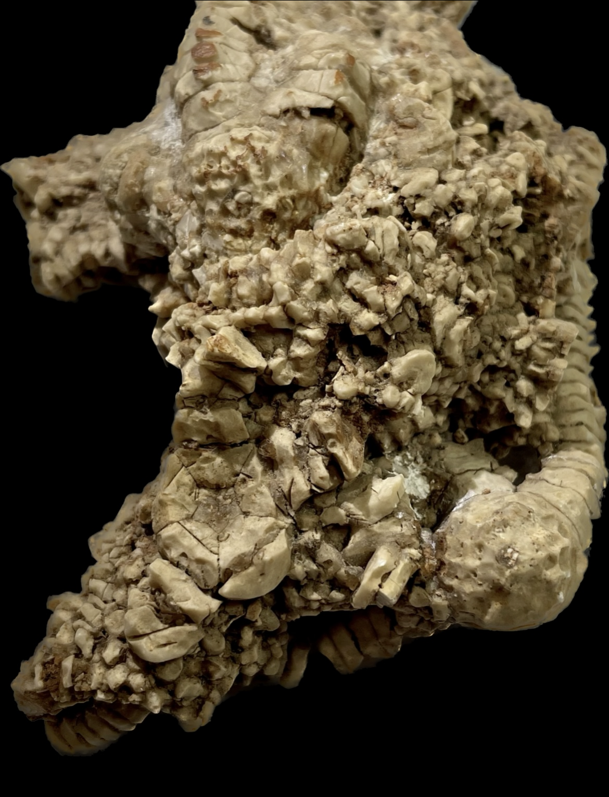

Solanocrinites sp.
Cretaceous
Glen Rose Formation
Salamander Cave, Boerne, Kendall Co., Texas, USA
Size: 10 cm across the piece
These are unusual comatulid crinoids a.k.a. "feather stars". Comatulids are stemless free-swimming crinoids which arose in the post-Paleozoic, and are the predominant type of crinoid alive today.
 
